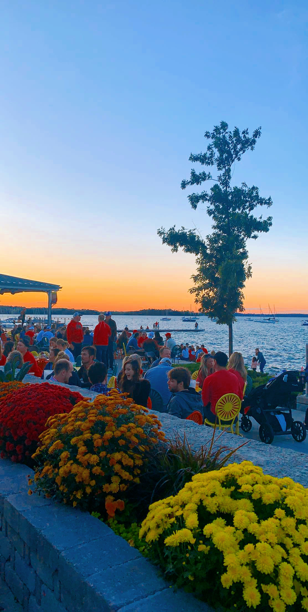

At the memorial union terrace, you can sit down and enjoy a delicious meal while doing work and watching the sunset! It is the most serene and peaceful spot along Lake Mendota. As a student and a tourist, this location is known for its colorful chairs and lively atmosphere.
The terrace has been around for many years and is one of the most popular attracitions here on campus! The picture below is an image I captured last semester during a beautiful fall sunset!
The Memorial Union Terrace is located at 800 Langdon Street, Madison, Wisconsin
